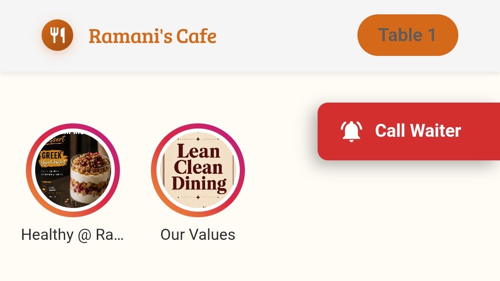
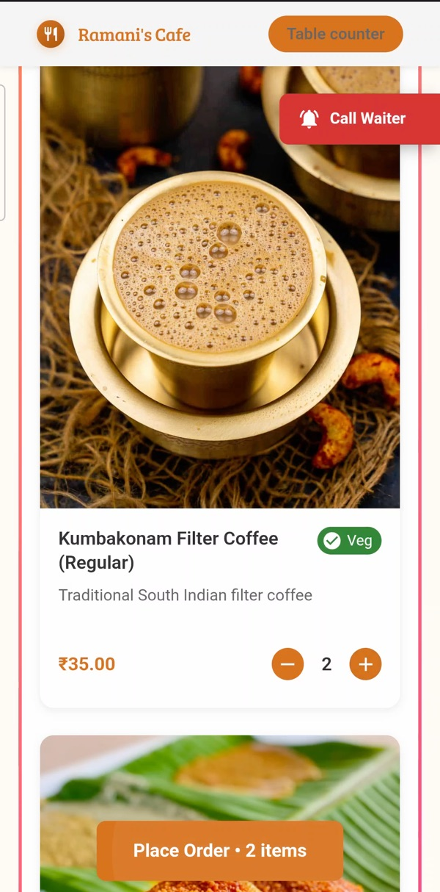
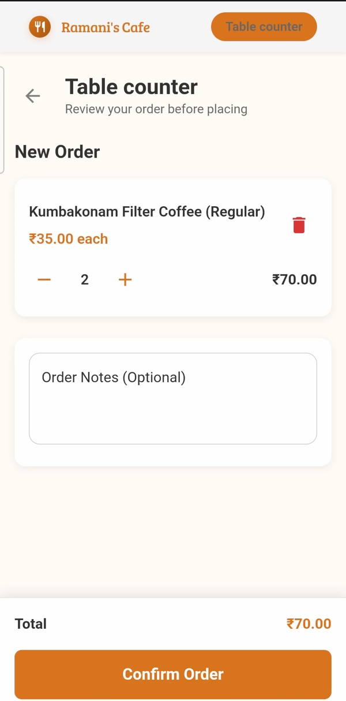
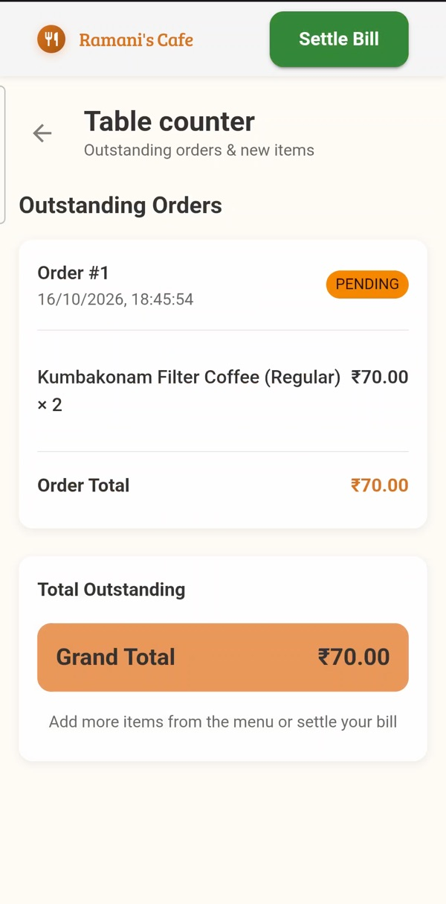
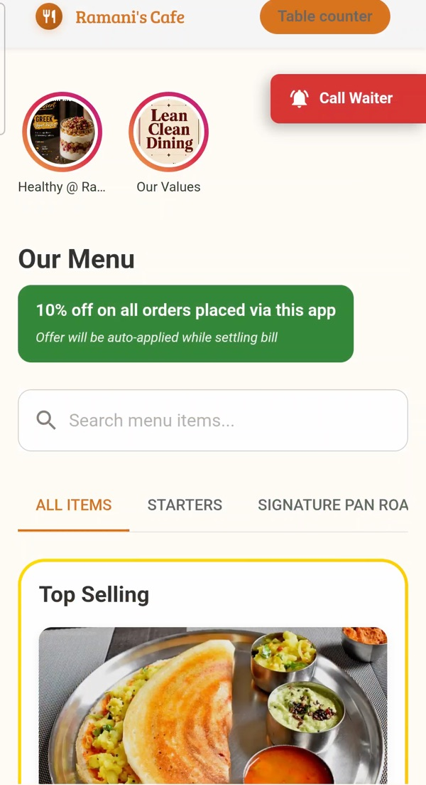
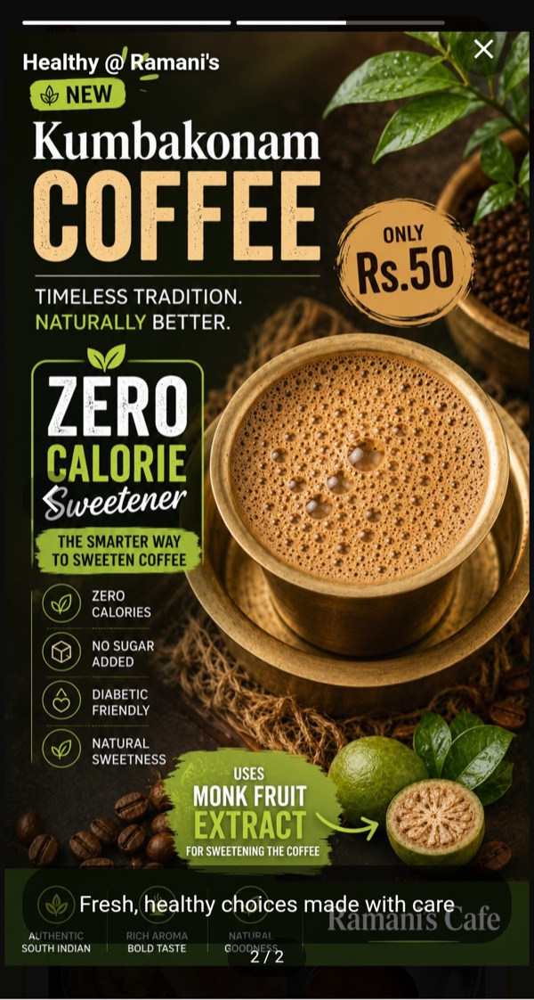
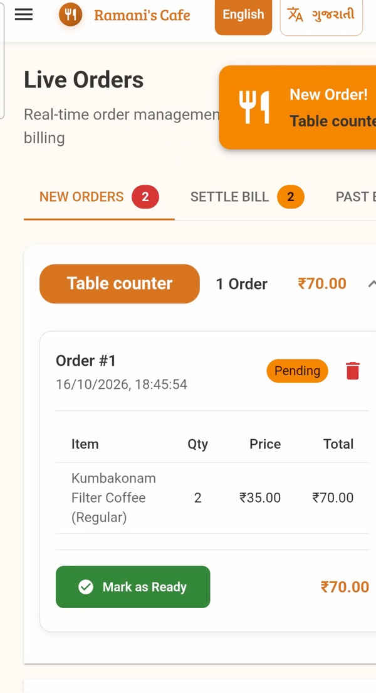
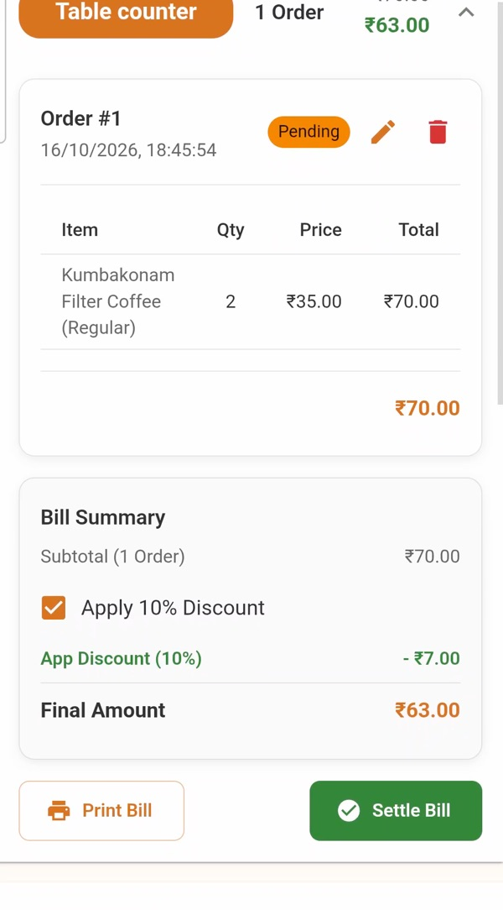
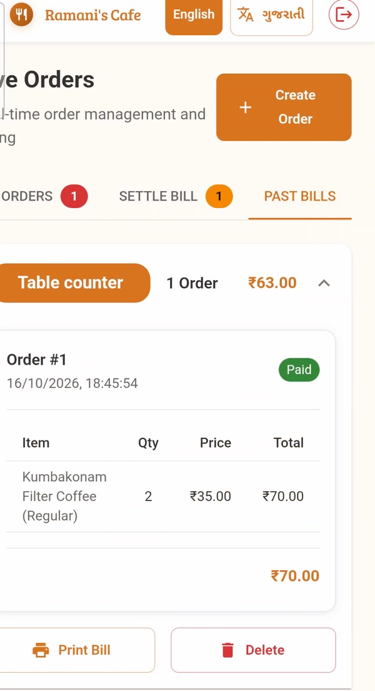

App installs
Many ask customers to install an app, and then send push notifications for months afterwards.

Ordering and internal workflows for a new-age fast casual QSR. No app, no login, no PII: scan, order, see the running bill.
One restaurant with too few staff, a varied menu and a bill nobody could see until the end.
One waiter covered the entire dining area, which seats 28.
With so few staff, guests waited to order, to ask questions and to get help.
No one had time to recommend beverages and desserts, which meant a lower average order value (AOV).
The menu needs variety to keep regulars interested. But when everyone orders from a different part of it, the kitchen gets overloaded and serves fewer orders.
Customers pay after dining, so while ordering they can't easily see what they've ordered or how much they owe. Many restaurants use this to push extra orders. We bet that being open about the bill would build trust and bring customers back.
Why existing QR ordering apps don't work.
Many ask customers to install an app, and then send push notifications for months afterwards.
Even the browser-based ones (PWAs) ask for a name, phone number and login. Nobody wants to give a restaurant their number just to order, only to get WhatsApp promos later.
Browsing a menu on a phone is hard, especially while eating, and sorting or filtering isn't practical mid-meal. People go back to the paper menu and the waiter.
To add a friend's order from their phone, the host shares an OTP and the friend types it in to link the two. That level of security belongs in a banking app, not a shared restaurant bill.
Apps that make customers pay up front run into refunds and order changes whenever an item turns out to be unavailable.





A bill is made up of several orders, which can come in one after another. Each order moves through three stages, and each stage has a clear owner:
Orders arrive as they're placed, so the kitchen can start preparing straight away. Staff mark an order done to keep the queue clean and spot new ones quickly.
Shows the waiter which tables still need to pay. After payment, they mark the bill settled and the table QR resets.
A record of completed, paid bills.



Each kitchen station handles one kind of food, so it gets its own view. New items in the queue are grouped by a category that the admin sets up. The view can be filtered by admin category, menu category or table number.
The menu is grouped the way customers think about and eat the food. The kitchen often wants to group the same items differently to run each station efficiently. So we added a separate admin category that's used only inside the kitchen.